"de todos los
que te queremos"
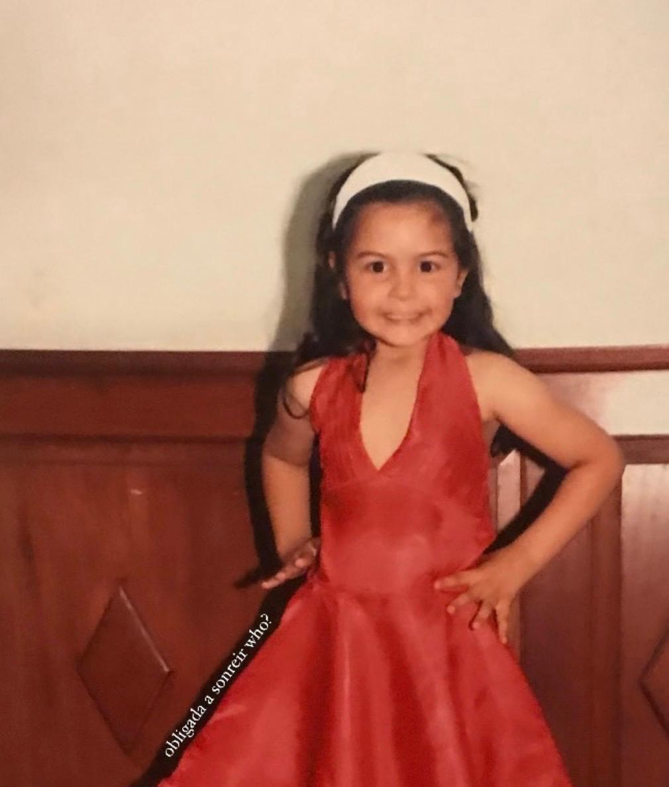
¿Cuál fue el lugar donde empezó todo?
"de todos los
que te queremos"

Feliz cumple, bri. Te deseo un año lleno de cosas lindas, de sueños cumplidos, de risas, de amor, y de todo lo que te hace muy feliz. Que la vida te rodee de lo que amas, de personas que te cuiden y de momentos especiales.
Tenes una forma de ser tan magica que iluminas con tu energia los lugares en los que estas y a las personas que te rodean. Sos una persona magnetica y muy especial, te mereces todo que te imaginas y más. Ojala nunca te falten ganas de intentar, de seguir, de creer en ti.
Que nunca nos falten momentos juntas, que nunca se apague esa sonrisa y que seas feliz hoy y siempre.
Te amo muchisimo, feliz cumpleee.
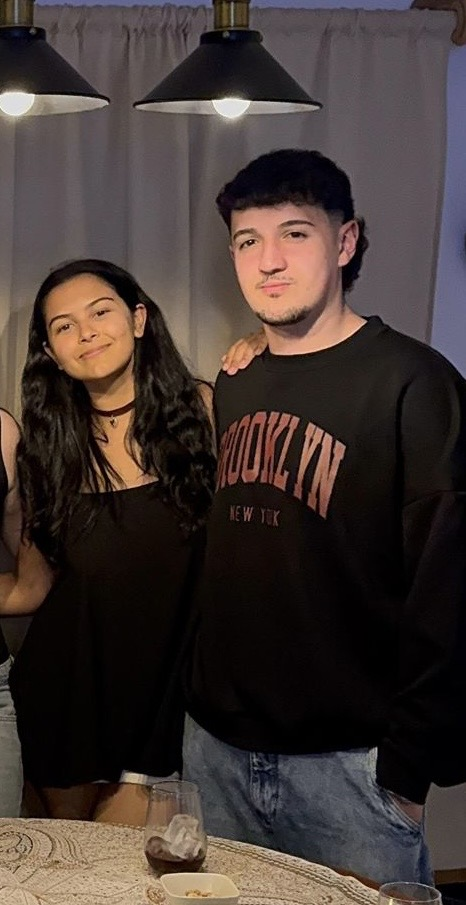
Feliz cumpleaños Suárez ,gracias por ser tan buena compañía y tener esa personalidad tan alegre.
Que pases muy lindo en tu día.Tkm.

Mi hadita artesana, mi primer facu amiga, mi fashion iconic, te amo mucho mucho mucho. Desde el primer día que nos conocimos conectamos enseguida y desde ese día me has demostrado el hermoso corazón que tenes. Sos tan especial, tan buena, tan hermosa en todos los sentidos, ojalá todos tuvieran la oportunidad de conocerte y poder tener tu amistad.
Me haces feliz brichu, gracias por estar en cada momento, porque juntas pasamos cosas hermosas y también dolorosas pero siempre juntas. Estoy orgullosa de ti, por cómo sos, por cómo enfrentas el mundo, por siempre estar de buen humor, con energía, por siempre demostrarme que sí existen las buenas amistades, porque en vos encontré eso, una amistad hermosa.
Te amo mucho amiga y espero que seas feliz siempre. feliz cumple ami. con amor de tu catuchina
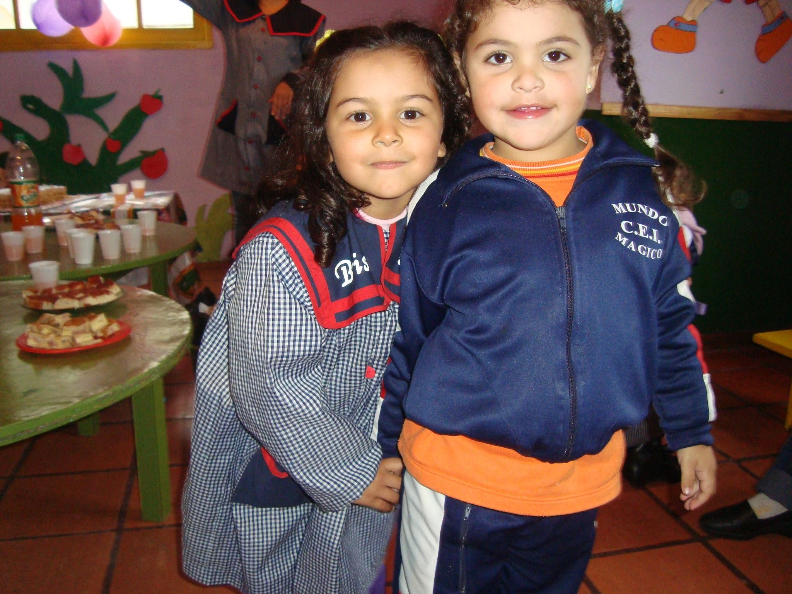
Llegaron los 21!! Muy feliz cumple para mi amiga más linda, no puedo evitar tener nostalgia cuando miro esa foto de cuando éramos chiquitas. Crecimos, cambiamos, pero lo nuestro sigue igual de lindo.
Gracias por tantos momentos y por estar siempre. Ojalá que todos tus deseos se cumplan siempre, te adoro muchooo
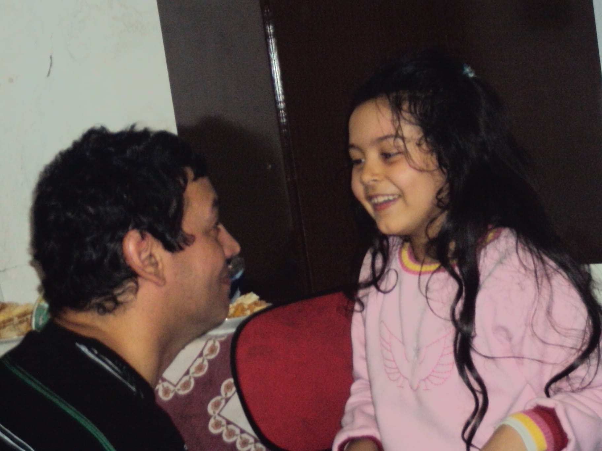
Hay momentos en la vida que son imborrables. Saber que venías. Verte nacer. Tenerte en mis brazos por primera vez.
Y después… la vida entera pasando delante de mis ojos: los giros interminables agarrándote fuerte de mis manos, las idas y vueltas a fiestas y bailes donde fui viendo crecer tu mundo y conociendo a tus amigos, esas charlas nuestras, raras y profundas, donde siempre terminamos conectando de una forma difícil de explicar.
También hubo momentos de distancia, de silencios y aprendizajes… momentos que me hicieron reflexionar muchísimo y entender todavía más lo importante que sos para mí.
Nunca voy a olvidar aquella huerta que hicimos en un carrito de moto, ni las noches acariciándote la frente para que te durmieras, esas que siempre quisiera que fueran eternas.
Y hoy te veo tan grande… tan fuerte y tan frágil al mismo tiempo. Pasa el tiempo, pero no puedo dejar de verte como mi bebé. Y aun así, siento un orgullo inmenso por la mujer en la que te estás convirtiendo cada día.
Seguramente en muchas cosas somos distintos. Pensamos diferente, vemos la vida diferente… pero hay algo que nunca cambia: la admiración enorme que siento por ti. Daría la vida por tenerte siempre cerca mío.
Y quiero que nunca olvides algo: aunque yo no sea perfecto, aunque el mundo a veces sea duro y complicado, siempre, pero siempre, vas a poder contar conmigo.
Aunque sea compartiendo unos mates, o conversando dentro de un auto sin rumbo.
Fuiste, sos y vas a ser eternamente… MI PRINCESITA BRISA
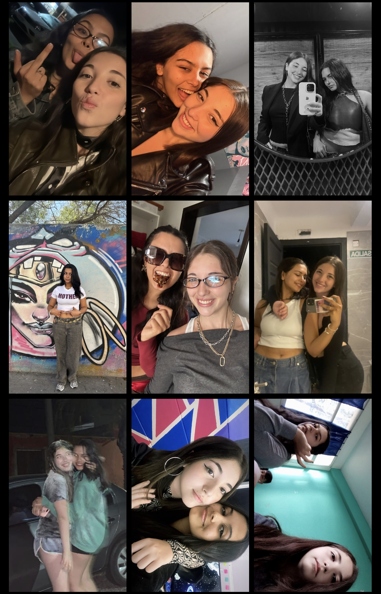
Si hace unos años me hubiera puesto a hacerte esta carta, habría intentado que mínimo durara 2 hojas para que entiendas lo importante que sos para mí, pero hoy prefiero decirlo más breve para que me entiendas mejor y para que no termine en repetición la misma frase 90 veces.
Ya vamos 8 años de amistad y me encanta como nos vamos acompañando en cada uno de nuestros progresos, desde los buenos hasta los malos.
Son 8 años de amistad los cuales no fueron sencillos pero teniéndote cerca se sobrellevaban muy bien. Siempre voy a agradecer que estés acá y de que seas mi amiga y hermana.
Gracias por quererme tal como soy y por ser tan buena persona siempre, porque no te quiero solo yo sino que toda mi familia y amigos te adoran.
Hoy cumples 21 y me parece re loco decir que somos amigas desde los 13 y que falta un montón de cosas por vivir juntas. Te amo montoneees hoy y siempre.
(ya sé que estás estresada por los parciales, y además de decirte que vos podes con todo, acordate de que estás haciendo algo que te encanta y en lo que sos buenísima, tenes un futuro gigante así que aprovecha a disfrutar esta etapa y te deseo muchos éxitos)
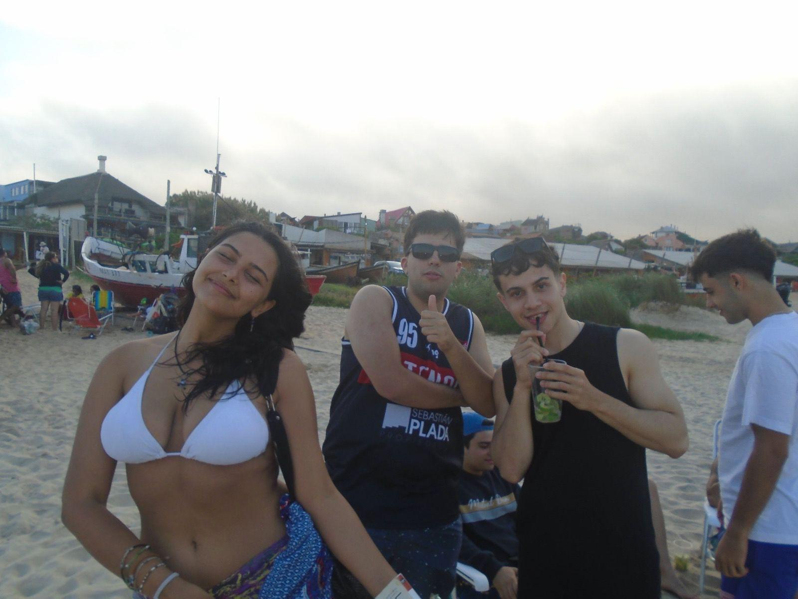
Feliz cumple querida!! Creo que esta carta debe ser mas que un simple mensaje de celebración, mas bien una expresión de lo que uno siente y piensa de ti.
Por ello te quería comenzar a recordar esos momentos donde comenzó nuestra amistad, aquella noche el la cancha de Atenas donde una mujer media loca, amiga de Liz, me comentaba su vida como si de un conocido de siempre se tratase y yo intentaba ayudar a solucionar algún problema. Eso marcaría el inicio de una muy buena amistad que ha pasado desde esa época en 2022 hasta el día de hoy.
Creo que un punto muy importante de inflexión es aquel PDD 2024, donde haciendo primero como mi tarotista de confianza, terminaste conociendo a un ser de luz que terminaría siendo tu novio.
Eso llevo a que nuestra amistad no solo sea una amistad buena, sino que te convertiste también en una de las personas mas importantes para una persona que considero como un hermano, ver como sos con el, las cosas que haces y la felicidad que le generas me hace ver que no podría haber mejor persona para que comparta la vida con el.
Por eso decidí elegir esta foto (aunque solo tengo una de nosotros 2 solos xd), como forma de simplemente agradecer algo muy importante; porque en ese momento dejaste de ser solo una persona importante para mi, sino que también comenzó una hermosa historia con mi hermano de la vida, y verlo tan feliz luego de todo lo que ha pasado, su progreso, su madurez y su éxito en parte también te lo debo a ti.
Con respecto a nuestra amistad te quiero agradecer por todo, por esa buena energía que desprendes, por siempre estar para mi cuando lo necesité, por esa sonrisa y alegría que siempre ayuda a que uno se sienta mejor, ese amor que desprendes y que hace a todo el mundo sentir querido, por ser una persona tan importante y darme ánimos en momentos tan difíciles de mi vida como la parte amorosa y universitaria.
Espero que nunca lo tengas que hacer, pero si en algún momento vuelves a esta carta porque no te sientes bien, quiero que recuerdes no solo lo buena persona y lo capaz que sos de hacer todo lo que te propongas; sino que siempre vas a tener gente a tu lado dispuesta a ayudarte y acompañarte en lo que necesites.
Con todo esto dicho, te deseo el mejor cumpleaños posible, que pases excelente ya sea con tu familia, amigos y todos lo que te acompañan siempre aunque no estén. Te amo mucho y espero nuestra amistad siga por muchos años mas
PD: Sigue siendo mío el pibe, respeta rangos. Salu2
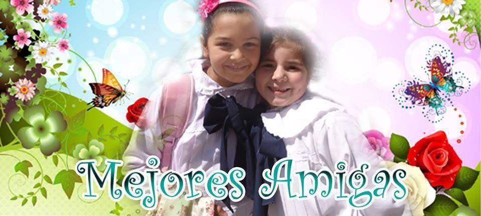
Brisa, creo que sabes que nuestra amistad siempre ha sido una de las cosas más importantes y bonitas de mi vida. Te quiero desde que tengo memoria, no hay un momento de mi vida en el que no hayas estado ahí, siempre vas a ser mi recuerdo más feliz de la infancia. Sos y fuiste una salvación para mí, más veces de las que puedo contar.
Gracias por ser exactamente como eres: tan dulce, tan compañera, tan noble, tan fácil de querer y tan increíble amiga. Contigo aprendí lo que significa sentirse acompañada de verdad
Siempre vas a ser mi invitada favorita en cada cumpleaños, en cada etapa importante de mi vida y, sobre todo, la persona en la que más confío en el mundo.
Te amo con el alma y espero que nunca olvides lo importante que eres para mí.
Feliz cumpleaños, Te amo
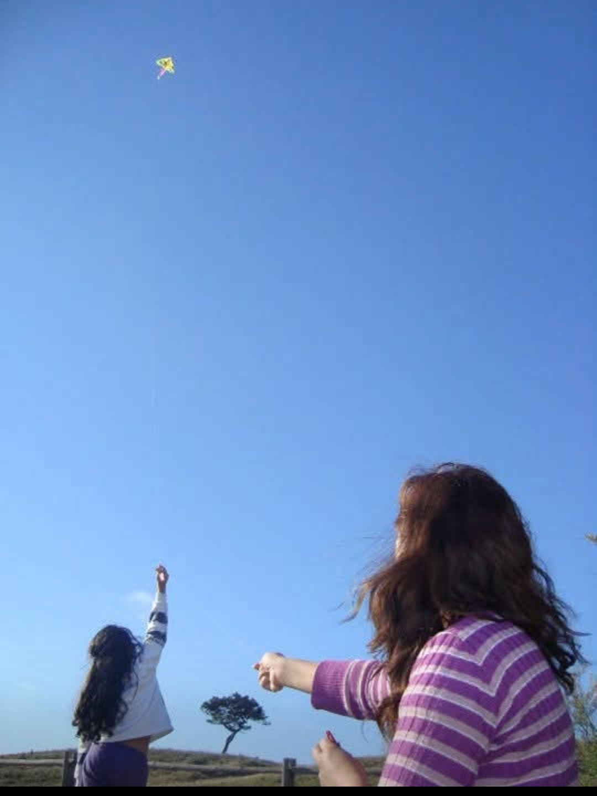
Hoy un día tan especial y cada día que lo necesites ;solo quiero para ti que puedas mirarte sin olvidarte todo lo que sos
.No dejes de ser la mejor artista , como en aquella obra con el vestido que fuiste reformando para otros días de disfráz. No dejes de crear nunca.Habla mucho como a la salida de la escuela ,como nuestras charlas de dos horas en el auto.
Protesta siempre como en esas marchas que me hacías ir.Deconstrúyete como tu dices pero solo los pedacitos a mejorar que todos tenemos .Llénate siempre de gente linda ,de buena energía como decimos. No dejes jamás de ser lo que sos y lo que sientes.Ni de bailar con la música del mercado aunque me pongas nerviosa.
Hay una personas que me ha dado los mejores consejos y los abrazos mas fuertes y necesarios.Cree siempre en ella. Cree siempre en tí y no olvides que voy a estar siempre para ti. Feliz cumple hija. Ama mamà.
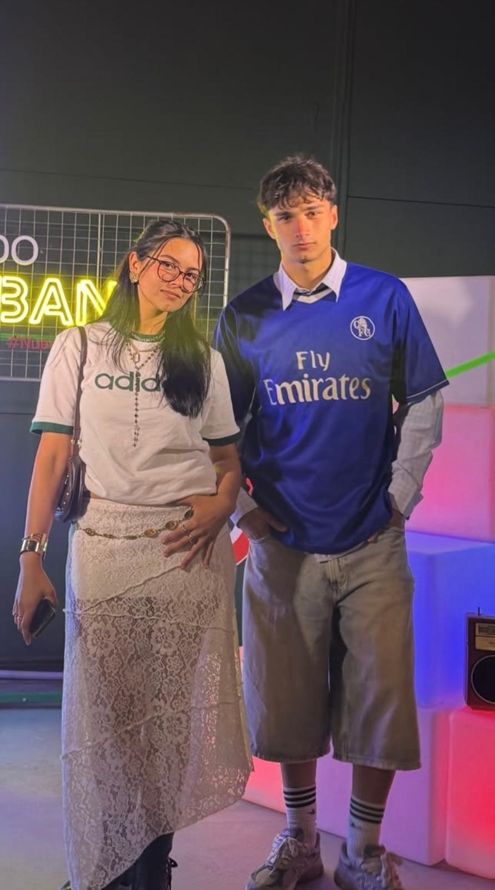
Muy feliz cumpleaños amiga preciosa, qué lindo haber podido coincidir contigo y compartir momentos juntos a diario.
Sos una persona maravillosa y mereces muchas cosas lindas.
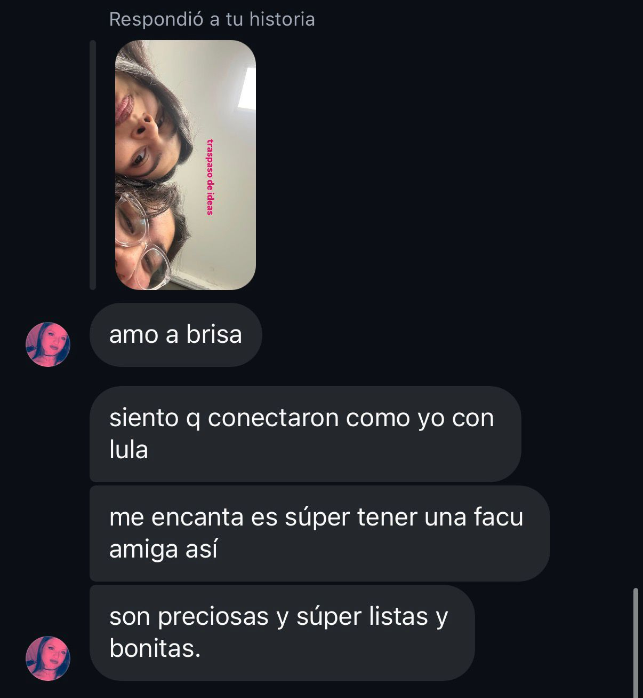
Feliz vuelta al sol para mi bizcochito de miel sin gluten, mi caramelo de guaco en época de gripe y mi bic azul al fondo del bolso en día de parcial. Bueno ta, mucha pavada. Ahora sí empiezo, amiga...... te amo, te necesito, bue basta.
Que placer haberte conocido amiga, me gustaría encarar el mensaje con eso que me dijo Camile en la captura, porque honestamente es tal cual. Siempre pensé en como iba a ser la carrera y con quien iba a compartirla, nunca pensé que iba a conocer a alguien tan increíble como vos, adoro compartir esto contigo, soy afortunada. Desde las mañanas más divertidas hasta las más feas (y si sabremos de esas), son más llevaderas contigo al lado.
No sé muy bien que decirte pero si se que quiero agradecerte por algunas cosas: gracias por ayudarme a conectar con mi lado más real, más femenino, más tierno y más auténtico, me recordaste que vivir puede ser liviano, sin aparentar o forzarme a encajar, simplemente permitiendome ser y sentir, y si bien eso es sobre mí, también es sobre vos y sobre el efecto que tenes en los demás... como logras iluminar cada lugar que habitas, como acompañas sin juzgar y tu forma tan noble de querer.
Gracias por formar este vínculo conmigo, un vínculo sin expectativas, solo con la calma de saber que estamos acompañandonos en el rarísimo proceso de crecer, hacer una carrera y transitar un duelo.
Te adoro con el alma, con mucho sentimiento, espero que tengas un cumpleaños y vida hermosa, y que sepas que siempre podes volver a mí cuando necesites compañía.
Beso enorme, de parte mía y de Ale, que seguro te escribiría algo hermoso también y estoy segura que me está acompañando mientras escribo esto.
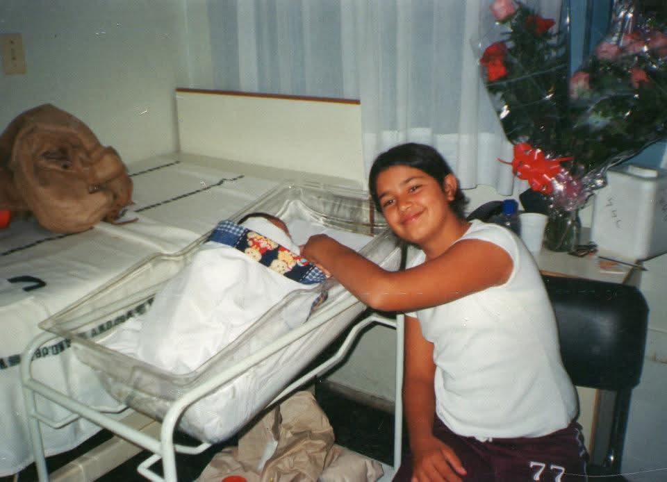
Brisi, No puedo creer que ya cumplas 21 años, todavía me cuesta entender en qué momento pasó tan rápido el tiempo. A veces te miro y veo a esa bebé chiquita que llegó a cambiarme la vida sin saberlo, y otras veces te veo convertida en esta mujer increíble y me llena de orgullo.
Sabes que siempre pedía tener una hermana. La deseaba de verdad, como esos sueños que una guarda muy fuerte en el corazón y cuando llegaste tú, fuiste uno de los regalos más lindos que me dio la vida.
Siempre he sabido que tenemos algo muy nuestro, algo especial. Me encanta que compartamos tantas cosas que nos encantan, que lleves un poquito de mí en ti, que somos muy pero muy diferentes, pero aunque no nos demos cuenta somos mas parecidas de lo que podemos imaginar.
Contigo aprendí un poquito a ser mamá mucho antes de que tuviera hijas. Aprendí a cuidar, a acompañar, a preocuparme por alguien más de una forma inmensa, que tu felicidad es la mía siempre.
Amo la tía que sos. Amo cómo las mirás, cómo las cuidás, cómo jugás con Alma (la poca y la mucha paciencia que tienes) y cómo les das amor de una manera tan natural. Ellas tienen muchísima suerte de tenerte, igual que yo.
Aunque ya tengas 21, sigues conservando esa parte tan dulce y tan niña. Esa sensibilidad, esa forma de entusiasmarte, de reírte, de seguir encontrando magia en las cosas simples. Supongo que para mí siempre vas a ser eso también, mi niña.
Verte y acompañarte a crecer fue y es uno de los privilegios más lindos de mi vida.
Ojalá nunca dudes de lo valiosa que sos ni de todo lo bueno que merecés. Y ojalá la vida te devuelva aunque sea una parte del amor que nos das.
Always
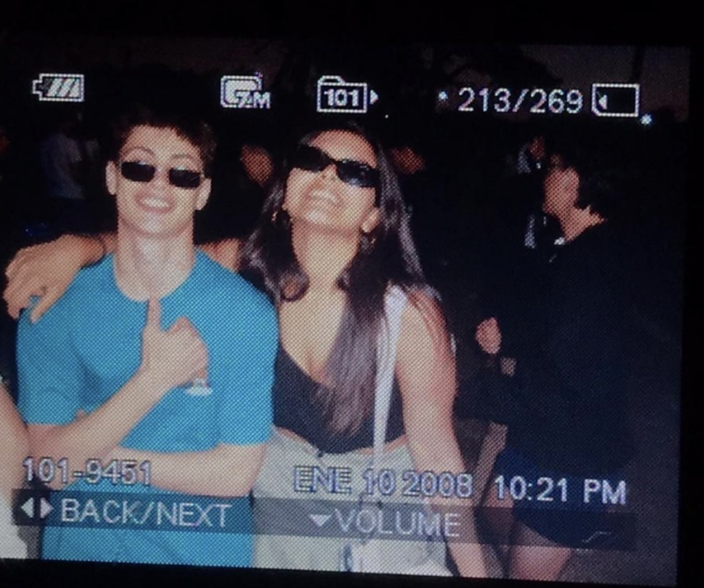
HOLA BRICHUU, esta carta de mi parte es para recordarte que te llevo presente por mas distanciados que estemos, fuiste de las primeras personas en apoyarme en lo que actualmente hago y eso lo valoro un montón.
estuve buscando fotos y me parece que la mas indicada claramente es una de la cámara, es increíble como la llevabas a todos lados y espero que lo sigas haciendo e inmortalizando momentos como dios manda.
FELIZ CUMPLE MALDITA BRICHU, te quiero mucho, sos mi persona con asperger favorita después de Sheldon Cooper xd.
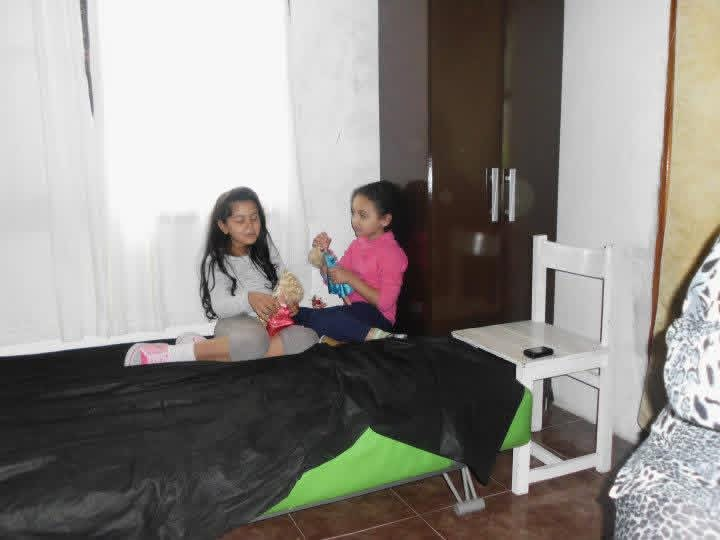
Te admiro muchísimo, Brisi. Admiro la persona que sos, la forma en la que encarás la vida, cómo querés a la gente y hasta esas pequeñas cosas tuyas que capaz ni te das cuenta. Para mí siempre fuiste esa prima hermana mayor, que miraba pensando “quiero ser como ella”.
capaz no te lo digo seguido, pero de verdad sos una de las personas más importantes de mi vida y te amo con todo mi corazón. Siempre, siempre voy a estar orgullosa de ser tu prima.
Gracias por ser ese lugar seguro entre tanto caos.
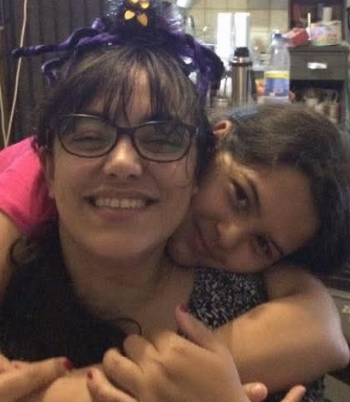
Hermosa te amo con mi ser. Sos hermosa en todos los sentidos por fuera pero mucho más por dentro Estoy más que orgullosa de ti
Te deseo lo mejor siempre siempre siempre
Tu tía favorita!!!
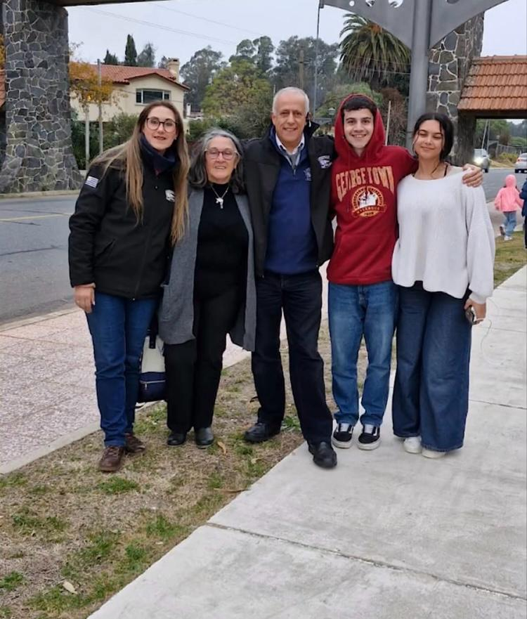
Querida BRI. Hoy comienzas a estrenar un nuevo año de tu hermosa vida. Te deseamos que esos 365 días nuevos qué la vida te regala hoy, estén llenos de proyectos, amor, felicidad y logros cumplidos.
Que cada meta que te propongas al cumplirla sientas que tu existir se colma de alegría y tu crecimiento personal se vea maravillosamente potenciado.
Eres un Ser Humano INCREIBLEMENTE HERMOSO, DULCE Y AMOROSO. Estamos muyyy felices de compartir nuestras vidas contigo.
MUY MUYYYY FELIZ CUMPLEAÑOS. TE ADORAMOS BRI.
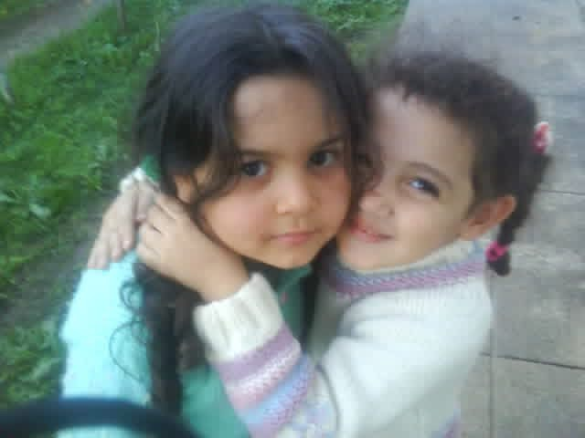
Para una persona especial. Mi querida nieta segunda, en la vida. No en el amor.
Para mí todos mis hijos y nietos serán siempre mi mayor orgullo, los amo con todo mi corazón.
Querida brisa, te recuerdo de chica siempre haciendo travesuras, siempre has sido una persona muy estudiosa e inteligente. Te deseo lo mejor en la vida, que puedas cumplir todos tus deseos y metas.
Y que seas muy muy feliz.
Te amo con todo el corazón.
Recibe un beso enorme y gigante, un abrazo para toda la eternidad de tu abuela que te ama mucho.
Rosita.
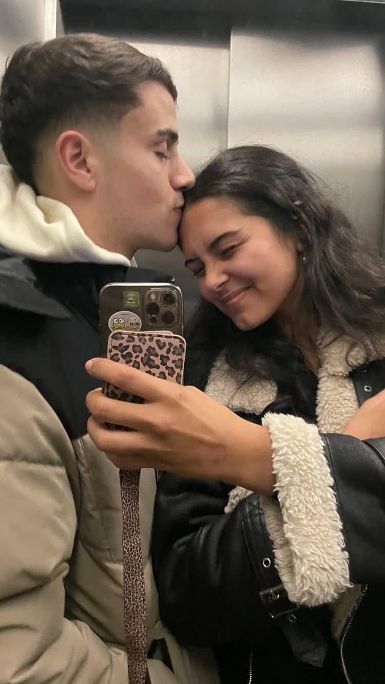
Hola mi amor, creo que ya llego mi momento je. Realmente estoy muy feliz de poder estar entregándote este regalo, obviamente no leí cartas, simplemente vi nombres y fotos y ya con eso fue suficiente para alegrarme del tanto cariño que veo hacía ti.
Creo que está de más decir lo tan importante que sos para mi, no solo por este hecho si no por muchos otros acontecimientos que por suerte venimos agregando entre nosotros los cuales hacen reforzar nuestro vinculo cada vez mas.
Mientras pensaba en como armar este regalo, y en la o las cartas que te escribiría, se me vino mucho a la mente una pregunta que tu me repetiste mas de una vez en este ultimo tiempo: “Mati, como puedo ayudarte?”
A simple vista, o simple lectura, es una pregunta que capaz, peca de verse básica, una pregunta que capaz, pasa desapercibido en muchas relaciones, pero que al menos a mi, me dejó pensando mucho.
Claramente esta pregunta capaz se deba a que yo tengo una rutina un poco pesada, y tu, con tu afán de querer siempre auxiliarme en momentos de ahogo, me lo planteas.
Cada vez que me hiciste esa pregunta, mi cabeza automáticamente respondia: “Pero en que mas me podrías ayudar?” Pero no lo respondia porque capaz no era una respuesta que tu esperabas o porque simplemente estaba tan trancado en otras cosas que no encontraba como expresarme.
Hoy, la respuesta a eso, es literalmente eso, no me podrías ayudar en algo más.
No por egoísta, si no porque creo que ni tu sos consciente de todo lo que me ayudas y has contribuido en mi.
Hace exactamente dos años, mi vida era sosa, era una vida que capaz carecia del amor sincero y que muy probablemente era mucho mas aburrida que hoy.
Esto, lo puedo decir con propiedad y gracias a ti.
Hoy, es increíble lo que puedo llegar a amar, hoy es increíble lo que puedo llegar a hacer, hoy es increíble lo que me puedo llegar a divertir, hoy mi vida es INCREIBLE, gracias a ti.
Y no, no menosprecio mi valor en todo este camino, le adjudico muchísimo valor al tuyo, porque es que te lo mereces.
Antes de ti jamás había sentido tanto el sentimiento de cuidado, jamas me había planteado el construirle un ramo de flores totalmente a mano a alguien, pensaba que las cartas hechas a mano eran cursi y que capaz el regalar flores cada 4 de cada mes era una exageración, pero todo eso simplemente se desconstruyo al ver tu sonrisa, al ver como saltas al abrazarme y como me llenas de amor en un mili segundo.
No leí las cartas, ni pienso hacerlo porque es un regalo para ti, pero me podría jugar toda mi vida a que la palabra mas repetida en todas es “amor” y es que tu sos la definición de eso, tu sos la definición de ser feliz con todo lo que te da la vida, tu sos la persona que toda persona quiere para poder salir adelante ante cualquier situación.
Hoy, capaz que tu sientes que esa persona se ha quedado un poco atrás por todo lo que ha vivido estos últimos años, por todo estos procesos a los que hoy te estas enfrentando.
Pero déjame tomarme el atrevimiento de decirte que no, y ahí es donde yo quiero hacer énfasis con estos regalos.
Yo, realmente perdí la ilusión muchas veces, muchas veces tuve que rechazar el amor en todo aspecto para poder adaptarme a mi vida y que no me consumiera el mundo, muchas veces pensé en mandar todo a la mierda y quedarme en el lugar que estaba porque sentía que simplemente era imposible recuperar todo eso que estaba negándome a tener y que estaba perdiendo por culpa de otros.
Tu, fuiste una de las razones por las que volvi a recuperar muchas cosas de esas, y fuiste una pieza absolutamente clave al recuperar mi ilusión y yo hoy, quiero hacerlo contigo.
Quiero volver a traer esa ilusión a ti, y demostarte que en todo este camino por el que hoy estas transitando, no lo estas haciendo sola, lo estas haciendo acompañada de personas que realmente creen en ti y que te aman.
Para que pedir más?
Ojala nunca tengas que volver, pero este regalo, fue hecho para que el día que te sientas perdida, o veas que estas perdiendo el rumbo, puedas volver a el para que veas lo tan increíble que sos y lo muchísimo que has ayudado a salir adelante a gente que realmente te ama.
Para que vuelvas a sentirte rodeada.
Para que vuelvas a sentirte tu.
Por el momento, te deseo un muy feliz cumpleaños y te espero con un abrazo enorme y un besito en la frente como cada vez que nos vemos.
Te amo con todo mi corazón, amor de mi vida.
De Mati grande, y seguro que el Matías perdido de hace 6 años te agradece y te festeja por volver a traerlo.
"gracias por
compartir tu amor con todos nosotros"
Ojala que siempre seas feliz, con muchisimo amor:
"De todos los que te queremos."
Fin.